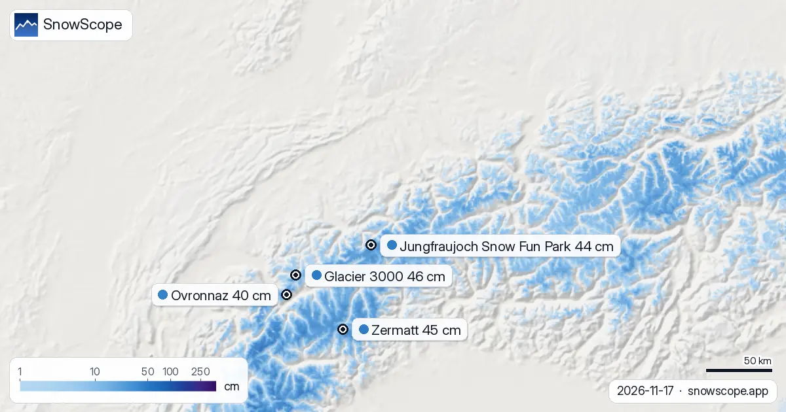
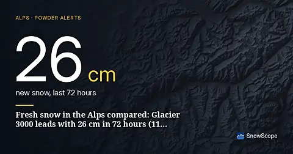

Alpine snow distribution after the storm: Valais Alps lead with 92 cm in 72 hours
A storm has redrawn the snow map of Switzerland. The Valais Alps captured the heaviest precipitation, accumulating 92 cm over three days, while the Bernese Oberland received 54 cm—a pattern shaped by the mountains' exposure to the incoming weather system.
See the live snow forecast for Glacier 3000 in the SnowScope appSnow depth, powder alerts and the 3D map, free.
Where the storm delivered most: Valais Alps pull clear
Working in high-altitude terrain, you learn quickly that storms do not treat all ranges equally. This one proved the rule. The Valais Alps, standing in the direct path of moist air flowing from the west, captured 92 cm of snow in the 72 hours to 17 November—substantially more than any other zone. The Bernese Oberland, to the north, recorded 54 cm, a respectable total but roughly half that of its southern neighbour.
This disparity reflects the orography we observe on the ground: the Valais Alps rise steeply and present a broad face to the prevailing flow. Glacier 3000, sitting at the junction of these ranges, registered 67 cm in the same period—evidence of how local topography channels and amplifies precipitation. The pattern is classic for Swiss storms: the high terrain between the Rhône valley and the border captures moisture; ranges to the north receive less.
| Resort | Snow depth | New snow, 72 h | Coming, next days | Top |
|---|---|---|---|---|
| Glacier 3000 | 46 cm | 67 cm | 91 cm | 2,931 m |
| Zermatt | 45 cm | 42 cm | 60 cm | 3,872 m |
| Jungfraujoch Snow Fun Park | 44 cm | 44 cm | 71 cm | 3,461 m |
| Ovronnaz | 40 cm | 54 cm | 78 cm | 2,456 m |
| Saas Grund | 37 cm | 28 cm | 41 cm | 3,142 m |

Fresh accumulation: 29 cm in 24 hours at the peak
The storm's most intense phase occurred as a single pulse. Some 11,300 square kilometres of the Alps received at least 5 cm of new snow in those three days—a substantial area, though the overall snow cover shrank from 16,510 to 12,830 square kilometres.
This apparent contradiction—heavy new snow yet falling total coverage—reveals what happens in early November: precipitation fell on exposed ridges and high passes, but at lower elevations, rain dominated and existing thin patches melted. The snow line currently sits near 1,700 m; below that threshold, the new material will not persist.

Altitude tells the story: 2,000 m upward, continuous white
The elevation bands show the clear boundary between transient and stable snow. From 500 to 1,500 m, coverage remains fragmentary—0 to 5 per cent. Between 1,500 and 2,000 m, snow covers only half the terrain, and depths average just 2 cm; rocks and vegetation still dominate the landscape. Above 2,000 m, continuity begins. The band from 2,000 to 2,500 m now holds 8 cm on average and 96 per cent cover. Above 2,500 m, the picture is complete: 22 cm of continuous snow pack, 100 per cent coverage. This is where reliable skiing begins in November.
The leading resorts: glacier terrain captures the advantage
Glacier 3000 now leads with 46 cm at its base, though that figure understates conditions higher up. Zermatt follows closely at 45 cm, its high altitude (3,872 m summit) ensuring preservation of recent accumulation. Jungfraujoch Snow Fun Park holds 44 cm at 3,461 m, and Ovronnaz, lower at 2,456 m but favourably positioned to catch westerly flow, sits at 40 cm. These are early-season depths—the snow remains young and may settle—but they represent a solid foundation. All five tracked resorts show above-normal conditions relative to their typical November averages.
What comes next: more snow forecast for three days
The storm is not finished. By contrast, the following week shows a sharp slowdown: the period from 25 November to 1 December is expected to bring only 40 cm. The first signs of fresh snow may arrive as early as 18 November, with the main event unfolding around the 20th.
Trend and outlook: coverage retreated, but altitude favours stability
Yesterday's snow-covered area stood at 16,510 square kilometres; today it is 12,830—a loss of 3,680 square kilometres. Week-on-week, however, the total has barely shifted, down only 40 square kilometres from 7 November. This tells us that the new snow is staying where it matters: above 2,000 m. Lower elevations continue to cycle between snow and melt. As the next pulse arrives around the 20th, coverage will spike again, but its persistence will depend on whether temperatures trend colder in the period that follows.
Tips for skiers
- Ski above 2,000 m where snow is continuous; below that height, runs remain thin and rocky in places. Check local avalanche bulletins before touring in the Valais Alps, where the heaviest accumulation sits on steep terrain.
- Expect rapid evolution of snow stability over the next 48 hours as new material settles and bonds. The Bernese Oberland and Valais Alps will respond differently to warming; higher, more shadowed slopes in the Valais may preserve unstable layers longer.
- Plan glacier and high-pass touring for 20 November onward, when fresh snow will reset visibility and coverage. Ground conditions on lower slopes will remain marginal until at least mid-December.
About these numbers
Resort snow depths are the deepest snow on the resort's upper slopes on the date shown; they are estimates for an area, not a measurement at one point. Forecasts can change. Always read the official avalanche bulletin before going off-piste.
Cite this report
For research, teaching or the press: the numbers and charts are free to reuse under CC BY 4.0 with this citation.
SnowScope (2026), Alpine snow distribution after the storm: Valais Alps lead with 92 cm in 72 hours, https://snowscope.app/blog/en/2026/11/switzerland-snow-report-17-november-2026.html, accessed 2026-11-17
SnowScope (Atlas Labs). (2026, November 17). Alpine snow distribution after the storm: Valais Alps lead with 92 cm in 72 hours. SnowScope snow reports. https://snowscope.app/blog/en/2026/11/switzerland-snow-report-17-november-2026.html
BibTeX
@misc{snowscope2026switzerlandsnowreport17n,
author = {{SnowScope (Atlas Labs)}},
title = {Alpine snow distribution after the storm: Valais Alps lead with 92 cm in 72 hours},
year = {2026},
month = nov,
howpublished = {\url{https://snowscope.app/blog/en/2026/11/switzerland-snow-report-17-november-2026.html}},
note = {Published 2026-11-17 12:53 UTC; accessed 2026-11-17}
}· CC BY 4.0 · Methods, data and tools →
Glacier 3000: snow and temperature by height, this winter vs last (tools) →
Follow Glacier 3000
Free: a message when fresh snow is coming, and the forecast every morning.
More snow reports

Snow-covered area: 45,820 km² on 9 November, 38,440 km² today, 46,730 km² forecast for 14 November. The map is getting less white. Glacier 3000: …

Zermatt in numbers: where the snow lasts, the safest months and how to reach the car-free village, from 46 past winters of snow data.

The Alps will see 21 cm of new snow at Saas Grund by 8 November. Forecast data from 5 November shows where and when snow falls across five key resorts.